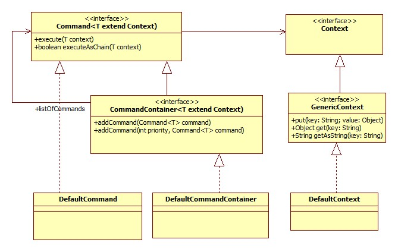

The command package is a really simple way to work with commands or chains. To reduce the complexity of the code it is often a good way to split it up to little pieces. Each piece offers a part of the functionality and this pieces can be combined to chains to execute the logic piece by piece

I document the package via junit tests. The whole package comes in source code with a 100% test coverage.
/*
* Simplest example. Put all commands in a container and execute it. All
* commands in the container will be executed in the sequence they were
* inserted.
*/
@Test
public void testExecuteCommandsWithoutContext() {
CommandContainer container = new DefaultCommandContainer();
container.addCommand(new PriorityOneTestCommand());
container.addCommand(new PriorityTwoTestCommand());
container.execute(DefaultContext.NULLCONTEXT);
}
/*
* Simple example. Put all commands in a container and execute it by
* bypassing a context. All commands in the container will be executed in
* the sequence they were inserted.
*/
@Test
public void testExecuteCommandsWithContext() throws Exception {
Context context = new DefaultContext();
CommandContainer container = new DefaultCommandContainer();
container.addCommand(new PriorityOneTestCommand());
container.addCommand(new PriorityTwoTestCommand());
container.execute(context);
assertEquals("1-2-", context.getAsString("priority"));
}
/*
* Priority example. Put all commands in a container by adding a priority.
* All commands in the container will be executed in order of the priority.
* If you add two commands with the same priority the first wins.
*/
@Test
public void testExecuteCommandsWithContextAndPriority() throws Exception {
Context context = new DefaultContext();
CommandContainer container = new DefaultCommandContainer();
container.addCommand(3, new PriorityThreeTestCommand());
container.addCommand(2, new PriorityOneTestCommand());
container.addCommand(1, new PriorityTwoTestCommand());
container.execute(context);
assertEquals("2-1-3-", context.getAsString("priority"));
}
/*
* Composite example. You can add commands as well as command containers in
* a simple container. A command with no priority gets the priority 0 and will
* be executed first.
*/
@Test
public void testExecuteCommandsWithMixedContent() throws Exception {
Context context = new DefaultContext();
CommandContainer commandContainer = new DefaultCommandContainer();
commandContainer.addCommand(1, new PriorityOneTestCommand());
commandContainer.addCommand(2, new PriorityTwoTestCommand());
commandContainer.addCommand(3, new PriorityThreeTestCommand());
CommandContainer mixedList = new DefaultCommandContainer();
mixedList.addCommand(new SimpleTestCommand());
mixedList.addCommand(commandContainer);
mixedList.execute(context);
String priorString = context.getAsString("priority");
assertEquals("S-1-2-3-", priorString);
}
/*
* Chain example. You can execute commands as a chain. The execution is
* stopped if one command returns false.
*/
@Test
public void testExecuteCommandsAsChain() throws Exception {
Context context = new DefaultContext();
CommandContainer commandContainer = new DefaultCommandContainer();
commandContainer.addCommand(1, new PriorityOneTestCommand());
commandContainer.addCommand(2, new PriorityTwoTestCommand());
commandContainer.addCommand(3, new PriorityThreeTestCommand());
CommandContainer mixedList = new DefaultCommandContainer();
mixedList.addCommand(1, new SimpleTestCommand());
mixedList.addCommand(2, commandContainer);
mixedList.executeAsChain(context);
String priorString = context.getAsString("priority");
assertEquals("S-A-B-C-", priorString);
}